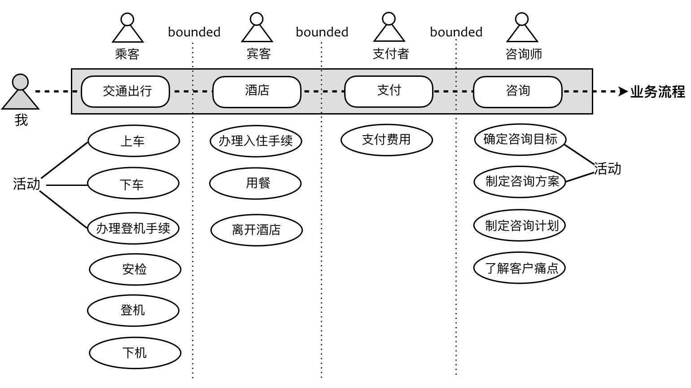

- 001 「战略篇」访谈 DDD 和微服务是什么关系？.md.html
- 002 「战略篇」开篇词：领域驱动设计，重焕青春的设计经典.md.html
- 003 领域驱动设计概览.md.html
- 004 深入分析软件的复杂度.md.html
- 005 控制软件复杂度的原则.md.html
- 006 领域驱动设计对软件复杂度的应对（上）.md.html
- 007 领域驱动设计对软件复杂度的应对（下）.md.html
- 008 软件开发团队的沟通与协作.md.html
- 009 运用领域场景分析提炼领域知识（上）.md.html
- 010 运用领域场景分析提炼领域知识（下）.md.html
- 011 建立统一语言.md.html
- 012 理解限界上下文.md.html
- 013 限界上下文的控制力（上）.md.html
- 014 限界上下文的控制力（下）.md.html
- 015 识别限界上下文（上）.md.html
- 016 识别限界上下文（下）.md.html
- 017 理解上下文映射.md.html
- 018 上下文映射的团队协作模式.md.html
- 019 上下文映射的通信集成模式.md.html
- 020 辨别限界上下文的协作关系（上）.md.html
- 021 辨别限界上下文的协作关系（下）.md.html
- 022 认识分层架构.md.html
- 023 分层架构的演化.md.html
- 024 领域驱动架构的演进.md.html
- 025 案例 层次的职责与协作关系（图文篇）.md.html
- 026 限界上下文与架构.md.html
- 027 限界上下文对架构的影响.md.html
- 028 领域驱动设计的代码模型.md.html
- 029 代码模型的架构决策.md.html
- 030 实践 先启阶段的需求分析.md.html
- 031 实践 先启阶段的领域场景分析（上）.md.html
- 032 实践 先启阶段的领域场景分析（下）.md.html
- 033 实践 识别限界上下文.md.html
- 034 实践 确定限界上下文的协作关系.md.html
- 035 实践 EAS 的整体架构.md.html
- 036 「战术篇」访谈：DDD 能帮开发团队提高设计水平吗？.md.html
- 037 「战术篇」开篇词：领域驱动设计的不确定性.md.html
- 038 什么是模型.md.html
- 039 数据分析模型.md.html
- 040 数据设计模型.md.html
- 041 数据模型与对象模型.md.html
- 042 数据实现模型.md.html
- 043 案例 培训管理系统.md.html
- 044 服务资源模型.md.html
- 045 服务行为模型.md.html
- 046 服务设计模型.md.html
- 047 领域模型驱动设计.md.html
- 048 领域实现模型.md.html
- 049 理解领域模型.md.html
- 050 领域模型与结构范式.md.html
- 051 领域模型与对象范式（上）.md.html
- 052 领域模型与对象范式（中）.md.html
- 053 领域模型与对象范式（下）.md.html
- 054 领域模型与函数范式.md.html
- 055 领域驱动分层架构与对象模型.md.html
- 056 统一语言与领域分析模型.md.html
- 057 精炼领域分析模型.md.html
- 058 彩色 UML 与彩色建模.md.html
- 059 四色建模法.md.html
- 060 案例 订单核心流程的四色建模.md.html
- 061 事件风暴与业务全景探索.md.html
- 062 事件风暴与领域分析建模.md.html
- 063 案例 订单核心流程的事件风暴.md.html
- 064 表达领域设计模型.md.html
- 065 实体.md.html
- 066 值对象.md.html
- 067 对象图与聚合.md.html
- 068 聚合设计原则.md.html
- 069 聚合之间的关系.md.html
- 070 聚合的设计过程.md.html
- 071 案例 培训领域模型的聚合设计.md.html
- 072 领域模型对象的生命周期-工厂.md.html
- 073 领域模型对象的生命周期-资源库.md.html
- 074 领域服务.md.html
- 075 案例 领域设计模型的价值.md.html
- 076 应用服务.md.html
- 077 场景的设计驱动力.md.html
- 078 案例 薪资管理系统的场景驱动设计.md.html
- 079 场景驱动设计与 DCI 模式.md.html
- 080 领域事件.md.html
- 081 发布者—订阅者模式.md.html
- 082 事件溯源模式.md.html
- 083 测试优先的领域实现建模.md.html
- 084 深入理解简单设计.md.html
- 085 案例 薪资管理系统的测试驱动开发（上）.md.html
- 086 案例 薪资管理系统的测试驱动开发（下）.md.html
- 087 对象关系映射（上）.md.html
- 088 对象关系映射（下）.md.html
- 089 领域模型与数据模型.md.html
- 090 领域驱动设计对持久化的影响.md.html
- 091 领域驱动设计体系.md.html
- 092 子领域与限界上下文.md.html
- 093 限界上下文的边界与协作.md.html
- 094 限界上下文之间的分布式通信.md.html
- 095 命令查询职责分离.md.html
- 096 分布式柔性事务.md.html
- 097 设计概念的统一语言.md.html
- 098 模型对象.md.html
- 099 领域驱动设计参考过程模型.md.html
- 100 领域驱动设计的精髓.md.html
- 101 实践 员工上下文的领域建模.md.html
- 102 实践 考勤上下文的领域建模.md.html
- 103 实践 项目上下文的领域建模.md.html
- 104 实践 培训上下文的业务需求.md.html
- 105 实践 培训上下文的领域分析建模.md.html
- 106 实践 培训上下文的领域设计建模.md.html
- 107 实践 培训上下文的领域实现建模.md.html
- 108 实践 EAS 系统的代码模型.md.html
- 109 后记：如何学习领域驱动设计.md.html
- 捐赠
012 理解限界上下文
理解限界上下文的定义
什么是限界上下文（Bounded Context）？让我们来读一个句子：
wǒ yǒu kuài dì
到底是什么意思？
我们能确定到底是哪个意思吗？确定不了！！！ 我们必须结合说话人的语气与语境来理解，例如：
- wǒ yǒu kuài dì，zǔ shàng liú xià lái de → 我有块地，祖上留下来的。
- wǒ yǒu kuài dì，shùn fēng de → 我有快递，顺丰的。
在日常的对话中，说话的语气与语境就是帮助我们理解对话含义的上下文（Context）。当我们在理解系统的领域需求时，同样需要借助这样的上下文，而限界上下文的含义就是用一个清晰可见的边界（Bounded）将这个上下文勾勒出来，如此就能在自己的边界内维持领域模型的一致性与完整性。Eric Evans 用细胞来形容限界上下文，因为“细胞之所以能够存在，是因为细胞膜限定了什么在细胞内，什么在细胞外，并且确定了什么物质可以通过细胞膜。”这里，细胞代表上下文，而细胞膜代表了包裹上下文的边界。
因此，若要理解限界上下文，就需要从 Bounded 与 Context 这两个单词的含义来理解，Context 表现了业务流程的场景片段。整个业务流程由诸多具有时序的活动组成，随着流程的进行，不同的活动需要不同的角色参与，并导致上下文因为某个活动的产生随之发生切换。因而，上下文（Context）其实是动态的业务流程被边界（Bounded）静态切分的产物。
假设有这样一个业务场景：我作为一名咨询师从成都出发前往深圳为客户做领域驱动咨询，无论是从家乘坐地铁到达成都双流机场，还是乘坐飞机到达深圳宝安，再从宝安机场乘坐出租车到达酒店，我的身份都是一名乘客（Passenger），虽然因为交通工具的不同，参与的活动也不尽相同，但无论上车、下车，还是办理登机手续、安检、登机和下机等活动，终归都与交通出行有关。那么，我坐在交通工具上就一定代表我属于这个上下文吗？未必！注意在交通出行上下文中，其实模糊了“我”这个概念，强调了“乘客”这个概念，这是参与到该上下文的角色（Role），或者说“身份”。
例如，我在飞机上，忽然想起给客户提供的咨询方案还需要完善，于是我拿出电脑，在一万米高空上继续思考我的领域驱动设计方案，这时的我虽然还在飞机上，身份却切换成了一名咨询师（Consultant）。当我作为乘客乘坐出租车前往酒店，并到前台办理入住手续时，我又“撕下了乘客的面具”，摇身一变成为了酒店的宾客（Guest）。次日早晨，我在酒店餐厅用完早餐后，离开酒店前往客户公司。随着我走出酒店这个活动的发生，酒店上下文又切换回交通出行。当我到达客户所在地时，面对客户，我开始以一名咨询师身份与客户团队交谈，了解他们的咨询目标与现有痛点。我制定咨询计划与方案，并与客户一起评审咨询方案，这时的上下文就切换为咨询工作了。巧合的是，无论是交通出行还是酒店，都需要支付费用，支付的费用虽然不同，支付的行为也有所差别，需要用到的领域知识却是相同的，因此这个活动又可以归为支付上下文。
上下文在流程中的切换犹如电影画面的场景切换，相同的人物扮演了不同的角色，在不同的上下文参与了不同的活动。由于活动的目标发生了改变，履行的职责亦有所不同，上述场景如下图所示：

整个业务流程由诸多活动（Actions）组成，参与这些活动的有不同的角色。在每一个上下文中，角色与角色之间通过活动产生协作，以满足业务流程的需求。这些活动是分散的，活动的目标也不相同，但在同一个上下文中，这些活动却是为同一个目标提供服务。
因此，在理解限界上下文时，我们需要重视几个关键点：
- 知识：不同的限界上下文需要的领域知识是不相同的，这实则就是业务相关性，参与到限界上下文中的活动也与“知识”有关。如果执行该活动却不具备对应知识，则说明对活动的分配不合理；如果该活动的目标与该限界上下文保持一致，却缺乏相应知识，则说明该活动需要与别的限界上下文协作。
- 角色：一定要深入思考参与到这个上下文的对象究竟扮演了什么样的角色，以及角色与角色在这个上下文中是如何协作的。
- 边界：限界上下文按照不同关注点进行分离，各自的边界则根据耦合关系的强弱来确定，越是关系最弱的地方，越是需要划定边界。
我们需要根据业务相关性、耦合的强弱程度、分离的关注点对这些活动进行归类，找到不同类别之间存在的边界，这就是限界上下文的含义。上下文（Context）是业务目标，限界（Bounded）则是保护和隔离上下文的边界，避免业务目标的不单一而带来的混乱与概念的不一致。
理解限界上下文的价值
Eric Evans 是在战略设计中引入限界上下文概念的，他认为：
既然无法维护一个涵盖整个企业的统一模型，那就不要再受到这种思路的限制。通过预先决定什么应该统一，并实际认识到什么不能统一，我们就能够创建一个清晰的、共同的视图，然后需要用一种方式来标记出不同模型之间的边界和关系。
为了解决多个模型的问题，我们需要明确地定义模型的范围——模型的范围是软件系统中一个有界的部分，这部分只应用一个模型，并尽可能使其保持统一。团队组织中必须一致遵守这个定义。
明确地定义模型所应用的上下文。根据团队的组织、软件系统的各个部分的用法以及物理表现（代码和数据库模式等）来设置模型的边界，在这些边界中严格保持模型的一致性，而不要受到边界之外问题的干扰和混淆。
基于以上引用的三段描述，我们可以清晰地勾勒出 Eric Evans 对于限界上下文的着眼点，那就是对边界的控制。倘若将上下文视为一国，则领域之王就应该捍卫国土疆域，国界内的一寸一尺之地都是神圣不可侵犯的。因而，我们要理解限界上下文的价值，就须得从边界来理解。
观察角度的不同，限界上下文划定的边界也有所不同。大体可以分为如下三个方面：
- 领域逻辑层面：限界上下文确定了领域模型的业务边界，维护了模型的完整性与一致性，从而降低系统的业务复杂度。
- 团队合作层面：限界上下文确定了开发团队的工作边界，建立了团队之间的合作模式，避免团队之间的沟通变得混乱，从而降低系统的管理复杂度。
- 技术实现层面：限界上下文确定了系统架构的应用边界，保证了系统层和上下文领域层各自的一致性，建立了上下文之间的集成方式，从而降低系统的技术复杂度。
这三种边界体现了限界上下文对不同边界的控制力。业务边界是对领域模型的控制，工作边界是对开发协作的控制，应用边界是对技术风险的控制。引入限界上下文的目的，其实不在于如何划分边界，而在于如何控制边界。
我曾经有机会向 EventStorming 的创始人 Alberto Brandolini 请教他对限界上下文的理解，他做了一个非常精彩的总结：bounded context are a mean of safety（限界上下文意味着安全）。这里的 safety 做何解呢？他的意思是：being in control and no surprise，对限界上下文是可控制的，就意味着你的系统架构与组织结构都是可控的；没有出乎意料的惊讶，虽然显得不够浪漫，但其实只有这样才能使得团队避免过大的压力。Alberto 告诉我：
Surprise leads to stress and stress leads to no learning, just hard work. （出乎意料的惊讶会导致压力，而压力就会使得团队疲于加班，缺少学习。）
这是真正看破限界上下文本质的大师高论！显然，限界上下文并不是像大多数程序员理解的那样，是模块、服务、组件或者子系统，而是你对领域模型、团队合作以及技术风险的控制。在《Entity Framework 模型在领域驱动设计限界上下文中的应用》一文中，作者 Juelie Lerman 认为：“当开发一个具有大型领域模型的超大规模的应用程序时，与设计一个单一的大领域模型相比，将大领域模型根据应用程序的业务需要“切割”成一系列较小的模型是非常重要的，我们也往往能够从中获得更多的好处。”她还提到：“更小的模型为我们的软件设计和开发带来了更多的好处，它使得团队能够根据自己的设计和开发职责确定更为明确的工作边界。小的模型也为项目带来了更好的可维护性：由于上下文由边界确定，因此对其的修改也不会给整个模型的其他部分造成影响。”显然，通过限界上下文对领域模型进行分解，就能保证在其边界内创建的模型内聚性更高，在边界隔离下，受到变化的影响也更小，反映为团队合作的工作边界，就更容易保证团队之间的沟通与协作。
限界上下文是“分而治之”架构原则的体现，我们引入它的目的其实为了控制（应对）软件的复杂度，它并非某种固定的设计单元，我们不能说它就是模块、服务或组件，而是通过它来帮助我们做出高内聚低耦合的设计。只要遵循了这个设计，则限界上下文就可能成为模块、服务或组件。所以，文章《Bounded Contexts as a Strategic Pattern Beyond DDD》才会写到：“限界上下文体现的是高层的抽象机制，它并非编程语言或框架的产出工件，而是体现了人们对领域思考的本质。”
宋代禅宗大师青原行思提出参禅的三重境界：
- 参禅之初：看山是山，看水是水；
- 禅有悟时：看山不是山，看水不是水；
- 禅中彻悟：看山仍然山，看水仍然是水。
我觉得理解限界上下文与模块、服务或组件的关系，似乎也存在这三重境界：
- 参悟之初：模块、服务或组件就是限界上下文。
- 当有悟时：模块、服务或组件不是限界上下文。
- 彻底悟透：模块、服务或组件仍然是限界上下文。
能理解吗？——更糊涂了！好吧，以上三重境界纯属忽悠，还是让我上一点干货吧。注意了，我要提到一个重要的概念，就是“自治”，抛开模块、服务或组件对你的影响，请大家先把限界上下文看做是一个“自治”的单元。所谓“自治”就是满足四个特征：最小完备、稳定空间、自我履行、独立进化。如下图所示的自治单元就是限界上下文，映射到编码实现，则可能是模块、组件或服务：
最小完备是实现“自治”的基本条件。所谓“完备”，是指自治单元履行的职责是完整的，无需针对自己的信息去求助别的自治单元，这就避免了不必要的依赖关系。而“最小完备”则进一步地限制了完备的范围，避免将不必要的职责被错误地添加到该自治单元上。对于限界上下文而言，就是要根据业务价值的完整性进行设计。例如，对于支付上下文，其业务价值就是“安全地完成在线支付业务”，那么在确定限界上下文的时候，就应该以完成该业务价值的最小功能集为设计边界。
自我履行意味着由自治单元自身决定要做什么。从拟人的角度来思考，就是这些自治单元能够对外部请求做出符合自身利益的明智判断，是否应该履行该职责，由限界上下文拥有的信息来决定。例如，可以站在自治单元的角度去思考：“如果我拥有了这些信息，我究竟应该履行哪些职责？”这些职责属于当前上下文的活动范围，一旦超出，就该毫不犹豫地将不属于该范围的请求转交给别的上下文。例如，在当订单上下文履行了验证订单的职责之后，需要执行支付活动时，由于与支付相关的业务行为要操作的信息已经超出了订单上下文的范畴，就应该将该职责转移到支付上下文。自我履行其实意味着对知识的掌握，为避免风险，你要履行的职责一定是你掌握的知识范畴之内。
稳定空间指的是减少外界变化对限界上下文内部的影响。自治的设计就是要划定分属自己的稳定空间，让自治单元拥有空间内的掌控权，保持空间的私密性，开放空间接口应对外部的请求。划分自治空间，需要找到限界上下文之间的间隙处，然后依势而为，沿着间隙方向顺势划分，而所谓“间隙”，其实就是依赖最为薄弱之处。例如，在电商系统中，管理商品上架、下架与评价商品都与商品直接相关，但显然评价商品与商品的依赖关系更弱。倘若需要分解限界上下文，保证上下文的稳定性，就可以将评价商品的职责从商品上下文中分离出去，但却不能分离商品上架和下架功能。稳定空间符合开放封闭原则（OCP），即对修改是封闭的，对扩展是开放的，该原则其实体现了一个单元的封闭空间与开放空间。封闭空间体现为对细节的封装与隐藏，开放空间体现为对共性特征的抽象与统一，二者共同确保了整个空间的稳定。
独立进化与稳定空间刚好相反，指的是减少限界上下文的变化对外界的影响。如果借用限界上下文的上下游关系来阐释，则稳定空间寓意下游限界上下文，无论上游怎么变，我自岿然不动；独立进化寓意上游限界上下文，无论下游有多少，我凌寒独自开。实现上看，要做到独立进化，就必须保证对外公开接口的稳定性，因为这些接口往往被众多消费者使用，一旦修改，就会牵一发而动全身。一个独立进化的限界上下文，需要接口设计良好，符合标准规范，并在版本上考虑了兼容与演化。
自治的这四个要素是相辅相成的。最小完备意味着职责是完备的，从而减少了变化的可能；自我履行意味着自治单元能够智能地判断行为是否应该由其履行，当变化发生时，也能聪明审慎地做出合理判断；稳定空间通过隐藏细节和开放抽象接口来封装变化；独立进化则通过约束接口的规范与版本保证内部实现的演化乃至于对实现进行全面地替换。最小完备是基础，只有赋予了限界上下文足够的信息，才能保证它的自我履行。稳定空间与独立进化则一个对内一个对外，是对变化的有效应对，而它们又是通过最小完备和自我履行来保障限界上下文受到变化的影响最小。
这四个要素又是高内聚低耦合思想的体现。我们需要根据业务关注点和技术关注点，尽可能将强相关性的内容放到同一个限界上下文中，同时降低限界上下文之间的耦合。对于整个系统架构而言，不同的限界上下文可以采用不同的架构风格与技术决策，而在每个限界上下文内部保持自己的技术独立性与一致性。由于限界上下文边界对技术实现的隔离，不同限界上下文内部实现的多样性并不会影响整体架构的一致性。
© 2019 - 2023 Liangliang Lee. Powered by gin and hexo-theme-book.